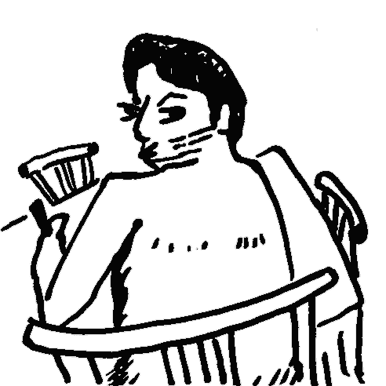

About Me
It is what it is. I like to do stuff, learn stuff, talk about stuff. I had fun doing many things, too much too keep track of. I always liked drawing, and approached graphic design at 11, when forums were the coolest thing. I also always had a soft spot for music, and that really became a part of my life when I was 12 and cast in the school musical I didn't want to be a part of - I started playing keys but then a friend forced me to learn guitar, so when I was 14 I bought my first guitar. This prompted me to learn eventually many instruments, music production, recording music and so I got myself involved in many albums and shows! And video productions as well: writing, directing and editing videos (mostly music-adjacent) are a rad thing to do. Also I like knowing stuff! It's crazy how anything is at all, I can't wrap my head around it. So the logical thing to do was to study Physics at University, since mathetmatical thinkings always was my thing. After being fascinated with modern quantum mechanics and its philosophical implications, I wanted to get hands on, so I studied Applied Physics for my master degree, where I really learnt how to work with physics, and to code, which comes handy in more ways than I thought (like writing this Portfolio). I really don't know what I will be doing next, hopefully everything.
